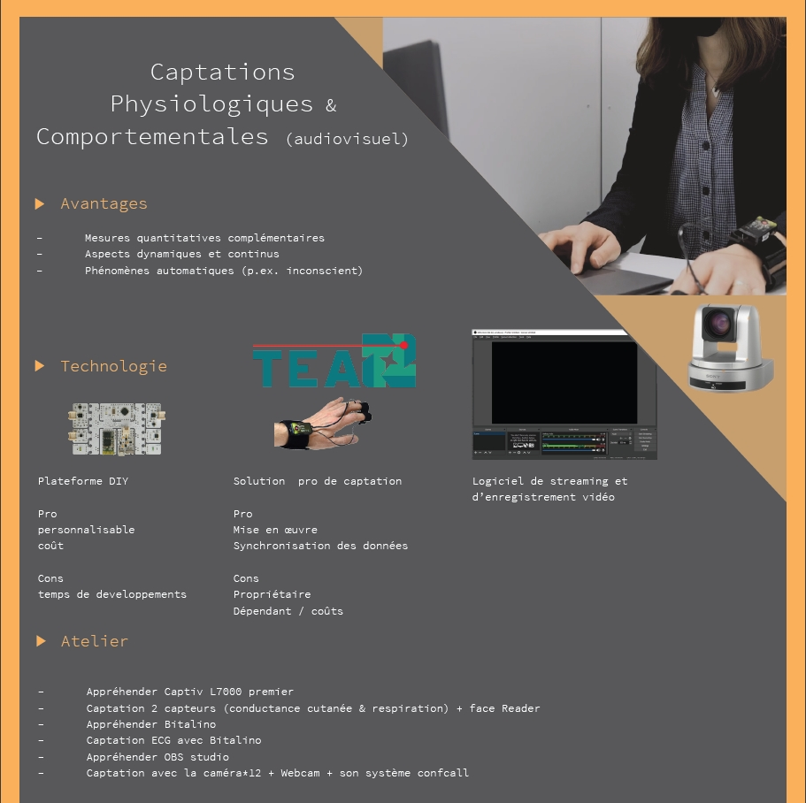
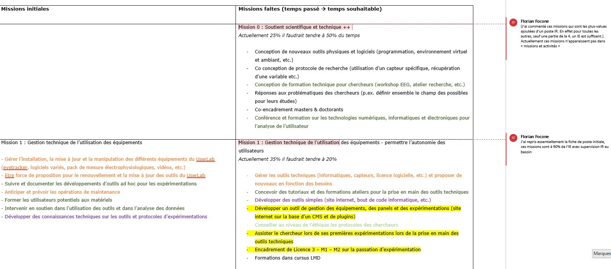
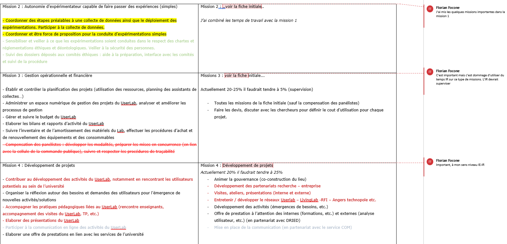
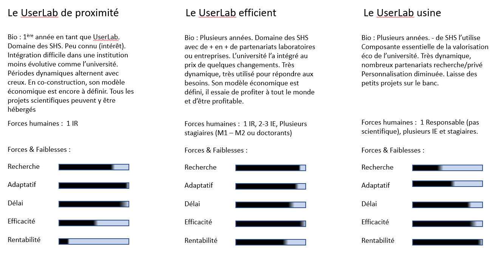

Thèse domaine des interaction humain-machine
Médiation et valorisation (éco)
Ingénieur R&D
Attrait (hobby) pour l'innovation et les technologies avec une valence conception centrée utilisateur
 Spécialisée en Sciences Humaines et Sociales (psychologie, marketing, économie, etc.)
Compétences et outils (informatiques, électroniques et numériques) pour l'analyse des comportements humains
Conçoit des environnements contrôlés (réels, virtuels et mixtes)
Mesure la réaction des utilisateurs (comportementale, physiologique, cognitive, etc.)
Mission 1 --> Soutient technologique en R&D - Focus SHS
Psychologie Cognitive
Recherche : Dépasser les tests "papiers crayons"
pour analyser le fonctionnement cognitif de patient
Developpement : changement comportement (douleur, phobie, syndrome post-traumatique , bien-être, etc. Complémentarité des données comportementales
(Eyetracking, performance, mémoire...)
Psychologie Sociale
Recherche : Standardiser des environnements
Developpement : Apprentissage (Softs skills, gestes techniques, management, concepts physiques...) Suivi et caractérisation de la performance
Tourisme & Culture
Recherche : Permettre des situations irréalisables
Developpement : Divertissements numériques (musée, art, voyages augmentés...) Enregistrer des données physiologiques
(EEG, ECG, Conductance cutanée...)
Marketing & Economie
Recherche : Augmenter le réalisme
Developpement : Modéliser, présenter un produit, convaincre... Evaluer de nouvelles variables comportementales
Mission 2 --> Conception d'outils technologiques - Mutualisation - Gestion
Création de tutoriels sur l'utilisation des technologies et méthodes
Animation d'ateliers - Formation et Accompagnement de chercheurs (masters, doctorants, MCF) et d'acteurs économiques



Métiers & Missions : en théorie et en pratique.
Fonction :
1/ Domaines (sensibilités) / attrait chercheurs (Doctorants, MCF, IR) pour les technologies numériques, informatiques et électroniques.
2/ Besoins (nombres de projets de recherche) / et pour chacun de la part à utiliser de telles ressources.
3/ Taille du lieu (outils et salles) : conséquence de 2 - compliqué à définir à "t" (inertie ; opportunités - financements ; etc.)
4/ des RH dispos (IR, IE, gestionnaire, etc.) : conséquence de 3
La fiche de poste du recrutement de UserLab Manager Angevin
La fiche des missions lors du recrutement (annotée 1 an après)
 
3 personae de UserLab 